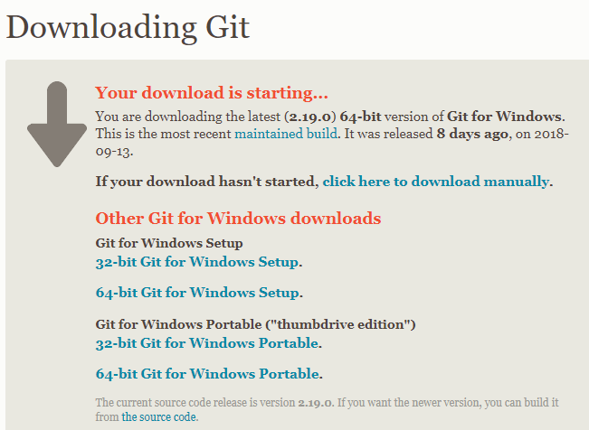

Thanks for looking at my introductory Git Guide. I recently went from zero to greater than zero with regards to my Git skills thanks to the guidance of others and I want to help others do the same thing. I hope you find this guide helpful. This is not a comprehensive guide to all beginner skills. This is simply a guide that can walk you through how to implement GIT into your regular workflow with minimal fuss and command memorization.
Introduction and Assumptions
I am assuming the following things about you:
- You have a computer
- You have a code editor installed
- If you don't have a code editor installed you will go download one and then return
- I like Visual Studio Code. There are many good ones out there. Just pick one you have heard of and try it.
- You know how to write some code of some kind
- You have a Github account
- If you don't you might as well get one because it is free
- This is optional. Only half of what we will be covering will be pointless if you don't.
Installation Guide
All right lets get going! What is GIT? It is a free open-source Version Control system. What does that mean for you? There are a lot of different really good reasons to use GIT. The simplest answer in my opinion is that GIT allows you to fearlessly play, change, and experiment with your code without any fear of breaking your code. And it allows simple efficient social coding. If you are going to work professionally with code you will probably need to learn it. So, first thing is downloading GIT for Windows
Once the download finishes choose a folder to save it to. When this is finished go to the file where you saved it to and click on the executable file. This will initiate the installation process.

Once you accept the terms it will create a GIT folder in your Programs folder. You should accept the default settings.
Next it will give you some checkboxes for whether you want the a desktop shortcut, a GIT GUI (or graphical user interface), and other options. I recommend doing whatever you want but don't unselect the automatic options.

Next you can choose your a folder name in the Start Menu. This is really just where you would go to look for GIT. If you are like me simple is better and you will just leave the file name GIT.

Now we choose wether we want to use the GIT Bash (terminal) only or Windows Command Prompt (the windows terminal). There is a third option that you will want to ignore because it is the most risky option. The Git Bash is a GIT terminal that allows you to enter commands. This option is the safest. I would stick with the default Windows terminal because this lets you use either the GIT Bash or the Windows Terminal and is nearly as safe.
Now just leave the rest of the options on the default settings and click next until it begins installation. If any of these choices matter I don't know about it and you can teach me!

Once the installation finishes you can select the checkbox that says to open the GIT Bash.
If you are using Visual Studio Code you can actually just open the Code editor and type Control - Plus - Back-tick. (The back-tick is the key to the left of the 1 key.) This opens the integrated Visual Studio terminal.
Navigating The Terminal
Say Hello To Your Terminal!

This is a terminal. It is also called the CLI or Command Line Interface. A terminal looks
like an ancient computer. But in spite of the fact that it is a total blast from the past
it is going to rock your developing mind.
If you look at the screen you will see 'C:\Users\Gabe'. This actually mirrors the folder
structure of your computer. We are in the LocalDisk(C), the Users folder, and I am logged in
to my Personal Computer so we see my name username (which is my name) Gabe.
Ok how do we move around and do anything? We can move around by selecting the folder we want
to go to. It is helpful to know the folder name. But if you didn't memorize all the folders
inside your computer it isn't quite so simple. But we have a command to see where you are. Type
dir into the terminal and hit enter.

The dir command is short for directory. It shows you the contents of the directory
(or folder) you are currently in. So now you know what all your folder names are.
So lets pick a folder. To go into a folder type cd FreeCodeCamp. CD stands for 'Change
Directory' and FreeCodeCamp is the name of the folder I selected. You can always prompt the terminal to
auto-complete the folder name by hitting Tab. If the terminal has options and it guessed wrong you can
keep hitting tab until you see the right folder name. When you see the correct folder name
or you finish typing it hit Enter.

Now you see the list of folder names includes Free Code Camp. This list of folder names just
tells you where in your folders you are. The last folder listed is the one you are currently in.
You navigated in the terminal! To go back one level type cd ... This time instead of
using the change directory command to go into a folder you are using it to back out of your folder you
are in to get to the parent folder.

Now you are back in the Gabe folder where we started. This is how you navigate around the terminal. When you want to use GIT on a group of files you want to navigagte to the folder in question. See you in the next section.
Creating and initiating
So now we know how to navigate around our files and we have GIT installed. So first we are going create a directory. So pick a location for this new file.
Now use your cd command and navigate to the folder where you want your new folder to
be located. Now enter mkdir DemoFolder. DemoFolder should be whatever you want your
new folder to be named.
And now we see a summary below. We see a line that tells us what our folders parent folders are.
And below this we see a summary of our last time we made changes to (or created in this case) our
folder and the name of our new folder DemoFolder.
Now we can go into the folder we created. Now that we are in our folder we can initiate GIT. We
do this with the git init command.
What does this mean? On a technical level I don't know entirely. Don't overthink it. Basically your should think of this as similar to installing an app on your device. You have to do it to use it. With GIT you have to install it For every device you use it on. And you have to initiate it in every folder you want to use it with. As a rule you will pick your project's primary folder that will contain all the files and folders associated with it and initiate GIT in that folder.
So initiating GIT basically adds GIT to the folder your are in and this will allow you to use
GIT to track your files inside this folder. git init also creates a Master branch
for you automatically. So what are branches? Basically branches are what allow you to have
and keep organized multiple versions of your code. The Master branch is the default branch.
Typically you want to keep your Master branch clean. If you want to try something that
might not work you make a separate branch to mess with it. Each time you make a branch you
are making a duplicate of the branch you were in. Then you write some code, decide if you
are keeping it or ditching it. You can merge it back into a branch which will adopt your changes.
A helpful way to think of this is the Master branch is for stable code that you know works.
Anything experimental or unstable (a work in progress) is better worked on in a branch. This allows
you to minimize the time lost due to failed experiments that changed parts of your code that worked.
And combining (or merging) your succesful experiments is easy.
We will only be covering merging branches on Github. You can merge branches on your local machine. We will cover this more later but I don't
So how do we know we have a master branch?
Let us use the git status command.
This is a really useful versatile command. It will tell you what is going on with regards to GIT.
For example we have GIT initiated in our empty DemoFolder. We can tell that GIT is
active because we see a status update. We are on Branch Master. No Commits yet. Commits are how
changes are packaged up. If you add all your changes into the commit you are basically bundling
your entire branch into the commit. If you select individual files to add then you are not
bundling the entire branch. And below that we see there is nothing to commit. Since we just
created an empty folder that seems about right!
Adding and Committing
Now we are ready to start using GIT. We start by creating a file and writing some code in it. I am just making a really simple index.html file and giving it a title.

So we wrote code. Now lets check in with GIT to see what it thinks about this. So we will
use the git status command to check on our new file.

So we see our new file appear in red. Everything we saw before after using the git init
command is still there along with text telling us that there are untracked files.
Then it lists the files or file that is untracked. Below this we see it tells us how to change
this. This tells us that GIT is aware of the file. But we haven't asked GIT to track the file
for us yet so it isn't. So let's do that. You can either use the file name to do this by typing
git add index.html. This way works if you only want to add some files to be tracked
but not others. In our case we will use git add * to add everything to be tracked.
The asterisk is commonly used to denote everything, or all possible in computer science.
Now we should check the status to see if it really worked.

Awesome! It is green instead of red. Now GIT is tracking the file. There is actually a name for this. Files that are being tracked but are not yet committed are in the "Staging Area." The proper name for this is "Index;" I find this unhelpful and confusing so I am just going to refer to it as the staging area. So now you have GIT tracking the file but you are not committed to the file yet. The staging area could be thought of like a loading dock. You have your items you are shipping in the loading dock so they are safely contained. But you don't have to ship them out. You can pick what you want from the loading dock to pack on the trucks. In the same way with GIT you can change your mind and add, remove, or edit files from the staging area without committing to them.
So lets make a commit. When you make a commit you are strongly encouraged to include a commit
message. This is considered a good practice because GIT is often used by teams of developers who
are all working on the same code base so more communication is usually helpful. There is a way to
do this without but why not set good habits and practice writing a short meaninful message about
what your commit will contain. So we will write git commit -m 'First commit' and
hit Enter.
And you have executed your first commit! You will see below [Master (root-commit)
a084555] First commit.
This is telling you that you have made a commit to the Master Branch. Then there is a id number
for this commit along with the message we wrote. We also see a summary
of what was in the commit. It says that there were 13 insertions because before there was
no index.html file and now our master branch has this file. The index.html file is thirteen
lines long so GIT counts each line as an insertion. Now the we have made a commit to the Master
branch. In this process we simply made changes by adding a file. Then we committed that to
the master branch. This means that we basically merged our changes into the Master branch.
This is a perfectly good way of changing the file. It is better to only use this method
if you are doing things you know you know how to do. If you are making changes you are not
sure you will want to keep you will want to do this on a separate branch.
In the next section we will learn about making branches and how that can allow us to make changes and then get rid of them or keep them without having to remember what all our changes were.
Branching
Branches are something that allows you to create a dublicate of your current repository. The
can be deleted, saved, or merged with the master. Creating a branch is quick and easy. To do
this you use the git checkout -b yourBranchNameHere. Checkout means you are
switching to this branch. -b is for branch. yourBranchNameHere is going
to be whatever you want this branch to be named. For our examples we will call it day3 because that
is the name from some of my example screenshots! Feel free to name these whatever you want. When
in doubt it is probably wise to be pretty formulaic in your name choices. Try to give branches
names that will help you stay organized.
And just like that you see Switched to a new branch 'day3' telling you
that you switched to a new branch. Now you can go crazy and do whatever you want. Or if you
want to go back to master branch you can say git checkout master. git checkout
will take you back and forth. If your get confused git branch will tell you which branch you
are in and list all other branches. You can think of it as checking out a branch to your code editor where
you can work on it and modify it. If you make changes to your current branch and try to switch branches
without adding your changes to the staging area GIT will stop you. You can add and commit changes to
your branch and they will be tracked and saved by GIT. The beauty of branches is that they are simple
and quick to create and you can keep what you have created or delete them.
Don't forget to do something with our day3 branch! Since our repository is just an HTML
index file with a title let's change the title. We will go with a corny GIT pun.
GIT IT! will be our new title. Now use your GIT skills we are learning
and save the file, add the file to the staging area, and make a commit for the day3 branch.
This is everything that we are going to cover here regarding using GIT locally. You can do just this and be perfectly happy. If keeping your code private is a concern you may prefer to only use GIT locally. GIT is an open-source free Source Control software. Github is a company that is built on top of GIT which you can use to share your code with others, collabaratively code with others, and more. Github is a wonderful site if you want people to see your code. You can use Github with privately but it costs money. The rest of this guide will cover configuring your GIT setup, creating a repository, adding a remote connection, pushing our master to the remote repository, pushing a branch, creating a pull request, merging the pull request, and updating the local master. All of these are aspects of storing your code on Github and how to communicate with the Github repository.
Configuring/Setup
So in this section we are going to use the git config command to set up GIT.
config is obviously an abbreviation for configure. So we are telling GIT that we
want to configure our global settings. So we are going to first enter this command git
config --global user.name "User name" with your name in the quotation marks. Then
hit Enter. As long as you don't see an error command this worked. Now we enter git
config --global user.email user@example.com with your email address.

For the moment that is plenty. Onward!
Creating a Github Repository
So to create a repository on Github first you need to log in to your Github account. Find the plus symbol and click on it. Select the create new repository option.
Choose a title for the repository. If you want to you can add a description of the project. There are few more options like choosing a liscence for your project. This isn't going to matter much today with our example repository so don't worry about this. There is an option to select a .gitignore. Leave this as none. There is also an option to initialize your repository with a ReadMe. Normally these are great, but for the moment don't do this. It is really easy to add one later but right now it will make it more complicated. So for today just give your repository a title and click create the repository.
Now pause on this screen. This screen gives us instructions for different scenarios. We want the second option "Push an existing repository from the command line." You can actually just click the clipboard icon to the right and then paste (Ctrl-V) the code into the command line. I reccomend typing the commands manually instead to get used to them. Having to manually type commands helps you to notice the parts of the command without forcing yourself to. It can also be better if you tend to learn by doing.
For our example you have me to guide you and we won't be doing it exactly the same because we are going a little out of order. But just know that if you want Github to tell you what to do you need to not initialize your repository with a ReadMe.
Adding a Remote URL
Now for remotes. To explain this (as well as I understand it at least) I want to review where we are. Only from GIT's perspective. So we have a local GIT repository with a Master Branch and our day3 branch which has a different title. We have a commit we created in our day3 branch with the different title but we haven't committed it to Master yet. And we have a currently unconnected Github repository that is empty. So the first thing we need to do is establish our master branch in the new empty Github repository. The Github repository is what we call a remote. It is a remote machine (a Github server located who knows where) that houses our repository. So first of all we actually need to go back to the terminal and switch from our day3 branch to the master branch. If we forgot this we would end up with the Master and our day3 branch switched with each other on Github which would just be confusing and cause issues.
Ok now we are ready to add the remote. So So the command is git remote add origin
https://github.com/yourUserName/yourRepositoryName.Git. So we telling GIT that
the command is about a Remote and we want it to add an origin. So first, the name origin
is referring to the URL for your repository. The end of the command is your repositories
URL with .Git added onto the end. So the Remote Origin we are adding is
a destination URL where we push our code to add it to the Github repository. But why
is it called an origin instead of a destination? Because often when people use Github
they are working collabaratively and they are cloning (or copying) the code from the
Github repository (the origin) to their local machine to work on it.
So that is how you specify the Remote Origin for a GIT repository. Once you do this
GIT will remember the Remote Origin for this repository. You will only need to worry
about the Remote Origin once per repository. If you do something when you are setting
up your Github repository and you don't have the little Cheat Page telling you these
commands You can use the exact command above only with the URL for your new repository
with .Git added onto the end.
Now we want to push master branch. git push -u origin master is the command
to do this. git push tells GIT you are pushing (or sending) something. -u
tells GIT that the next thing is a URL. Origin is the keyword that you use to
refer to the Remote Origin. And lastly master is the code branch we are
pushing.
Github will require you to login in to Github if this is your first time interacting with Github from the command line on this machine.
Now, assuming everything went correctly, you will see a lot of things happening
in the terminal. When GIT finishes you will see * [new branch] master --> master
and Branch 'master' set up to track remote branch 'master' from
'origin'. This is basically saying that your original local 'master' branch
is tracking the remote 'master' branch you just created. Only one thing to do now,
go to your Github account and check out your no longer empty Github repository.
Pushing your branch
Since we just pushed the local master branch we are now ready to work with the local day3 branch. Right now we should have the index.html file available to see or change in the Github repository. This was our master branch with the first title that we pushed to Github. But we created the day3 branch and gave it a silly title. So let us go back to the terminal.
You are now ready to push the commit with the day3 branch. Because you created the commit in the day3 branch you refer to the commit with the branch name. The command is basically the same as in the previous section. The only differences is that you already added a remote and Github authorized a personal access token for the computer you are on. If you look in your email you will probably see an automatically generated email from Github saying that a personal access token for your Github account was issued. This is a security notice just like if you log into email on a different device and you get an email asking if that was you.
So now you can enter git push -u origin day3.
Now just like when we pushed the master branch you will see a notice telling you that there is a new branch named day3 in the remote repository. Lets go create a pull request!
Pull Request
Creating a pull request is a process with the main purpose of alerting the Repository owner that you made changes or additions to their code and asking them to approve the changes and merge them into their repository. They can then approve and merge the pull request, suggest improvements to you should make, or reject the pull request. For us it is a little pointless since we are the repository owner and the ones making the pull request to ourselves! But it is good practice for collabarating with people. Also it creates documentation of your coding process. This is very useful if you want to work professionally as a developer.
If you go to your Github repository you will see a tan notice telling you there is a new branch that you recently pushed. There is a green Pull Request button. Click it.
This will give you the option to add comments to attach to the pull request. Above the comment box Github tells you that you are comparing Master and Day3 branches. Next to this there is a green checkmark and 'Able To Merge.' This is good. It means that there are no conflicts between to the 2 branches and GIT can merge them. Go ahead and click 'Create Pull Request.'
Because you are the repository owner you will immediately see an option to merge the pull request along with a notice that the branch can merge without conflict. If you want to see a side by side comparison of the Master branch and the day3 branch there is a 'Files changed' tab you can click to compare them. Go ahead and click 'Merge Pull Request.'
Now you will see a purple Merged icon and Github will tell you the pull request was succesfully merged. There is a 'Delete Branch' button. We don't need the day3 branch anymore so go ahead and delete it. If you need it back there is an undo button. Now go ahead and click the blue link to the repository or find the 'Code' tab and click it. Open the index.html file. Find the now changed title and revel in your newfound ability to Git things done!

Pulling Master
Ok now we have succesfully created a pull request and merged it. Our Github repository
now has the updated title. But our local repository is not updated. So go back to
the terminal and switch back to the master branch. Now enter git pull origin
master.
This is like pushing the master or a branch to the origin (remote URL) except we are
using the pull command. The pull command gets the remote origin's master branch and
merges it into our local code master branch. This is very similar to the git
fetch command except that git pull automatically merges the
pulled code.
Final steps
Now we just want to clean up our local GIT repository. Since we updated or local master
branch we don't need the day3 branch anymore. Enter git branch -d day3.
Now there is just one more thing that you need to do. Use GIT!